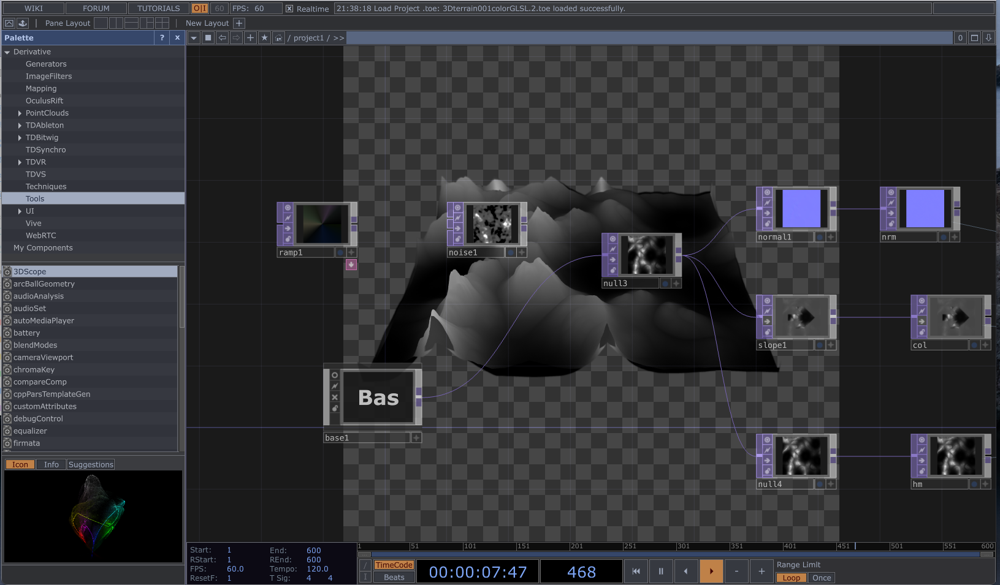

For this project, there are related 5 space and the iteration from 2D to 3D:
https://github.com/yuliniris/creative-tech-4/tree/main/projectMapping.
File name: loopAudio.toe
https://github.com/yuliniris/creative-tech-4/tree/main/projectMapping.
File name:3Dterrain001color.toe
For 3D terrain, I introduce GLSL module instead of Noise module to formulate the shape
https://github.com/yuliniris/creative-tech-4/tree/main/projectMapping.
File name:3Dterrain001GLSL.toe
I set various parameters, and they formulate the shape.
But, the parameter "translate" cannot work, so the shape is not dynamic.
Also, as for color, I tried "Geometry Instance2 color OP", it showed fatal error. I guess the problem may be with the "ramp",and the feedbackloop sets. I will try it later.